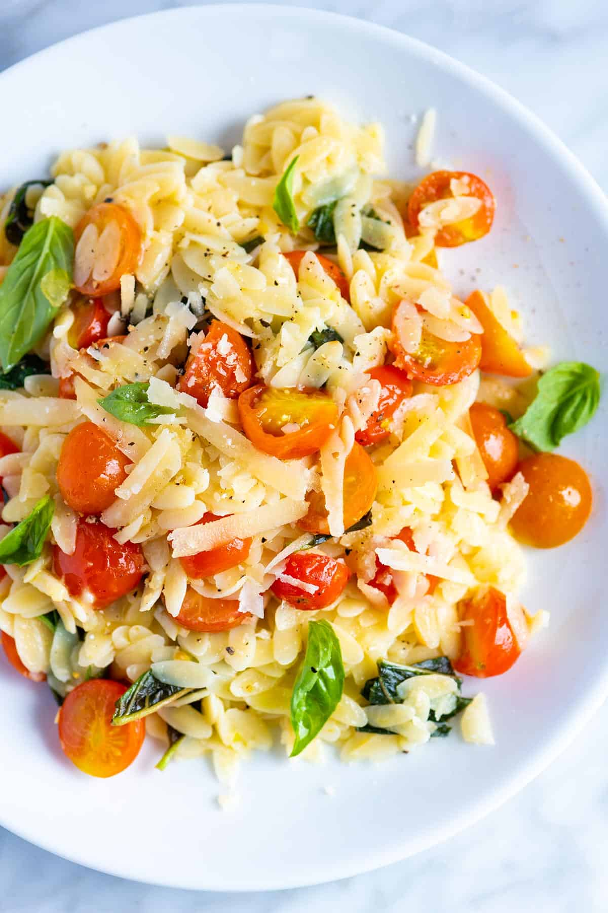

Orzo Pasta
Orzo pasta is a type of pasta shaped like a large grain of rice. It is commonly used in soups, salads, and side dishes.

Ingredients
- 1 cup orzo pasta
- 2 cups chicken broth
- 1 tablespoon olive oil
- 1/2 cup grated Parmesan cheese
- Salt and pepper to taste
Instructions
- In a medium saucepan, heat the olive oil over medium heat.
- Add the orzo pasta and cook, stirring frequently, until it is lightly toasted, about 2-3 minutes.
- Pour in the chicken broth and bring to a boil. Reduce the heat to low, cover, and simmer for about 10-12 minutes, or until the orzo is tender and the liquid is absorbed.
- Remove from heat and stir in the grated Parmesan cheese. Season with salt and pepper to taste.
- Serve warm as a side dish or as a base for a main course.
Home